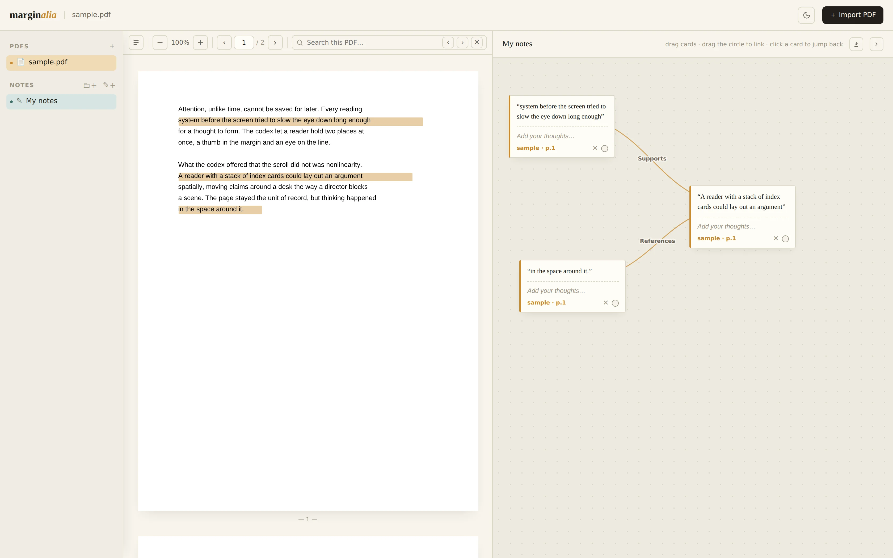
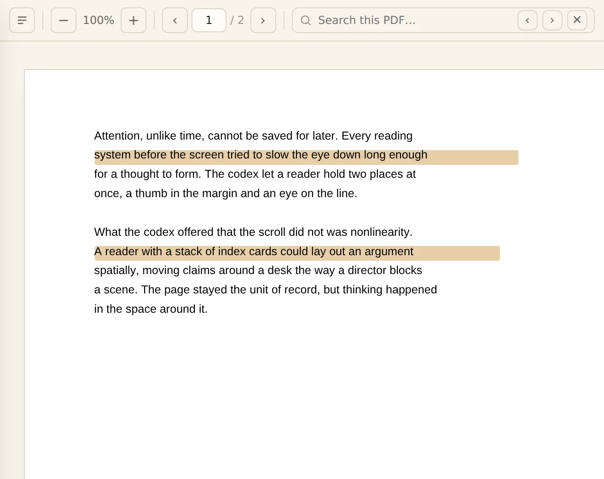
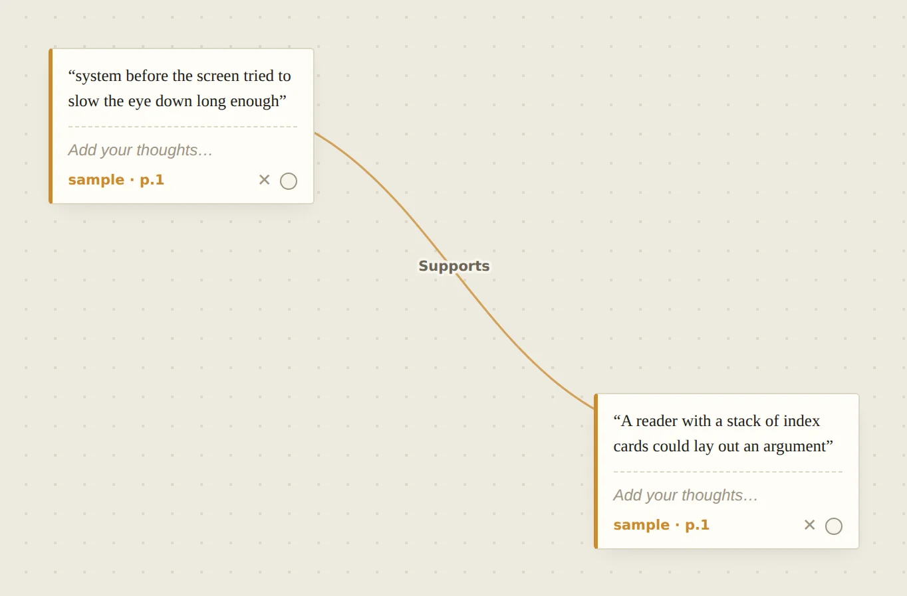

A PDF reader that remembers
Every excerpt
remembers
its page.
Pull passages from any PDF, link the ones that relate, and click a note to jump straight back to its page.

How it works
Three moves. That's the whole app.


Pull a passage, not just a highlight
Drag a marquee over any line, even on a scanned page with no selectable text, and it lands on your notes canvas as its own card.
Link what relates, and say how
Drag between two cards to connect them, then label the thread: supports, contradicts, references, or your own word. Reverse or delete it any time.
Click a note, land on its page
Every card remembers the document and page it came from. One click opens the PDF at that exact spot.
Pull a passage, not just a highlight
Drag a marquee over any line, even on a scanned page with no selectable text, and it lands on your notes canvas as its own card.
Link what relates, and say how
Drag between two cards to connect them, then label the thread: supports, contradicts, references, or your own word. Reverse or delete it any time.
Click a note, land on its page
Every card remembers the document and page it came from. One click opens the PDF at that exact spot.
No account. No upload.
Everything stays on your device.
Your PDFs and notes are stored in your browser's IndexedDB, not on a server. Nothing is uploaded, there's nothing to sign up for, and the code is open source, so you can check for yourself.
Export
Your notes, ready for your AI.
Export a canvas as one Markdown file: every excerpt, the page it came from, your own notes, and how each one connects. Give it to ChatGPT or Claude along with the PDF, and it reads your thinking as well as the source.
- “Summarize my argument in five bullets.”
- “Where do my notes contradict each other?”
- “Quiz me on this chapter.”
Every excerpt remembers its page. Yours can too.
Open the appFree and open source (MIT). View the code on GitHub.
Buy me a coffeeFree forever, no ads. A coffee keeps it that way.